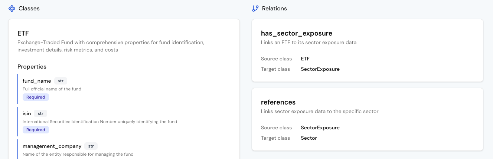
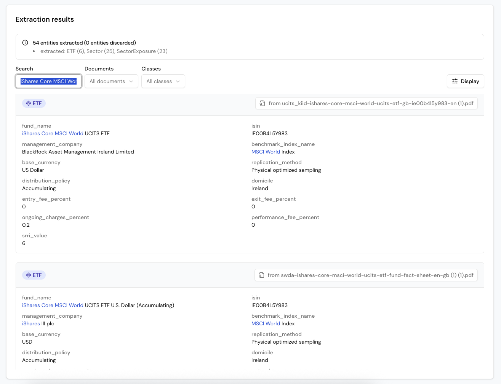
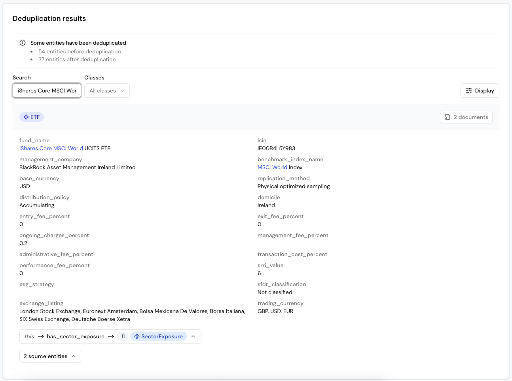
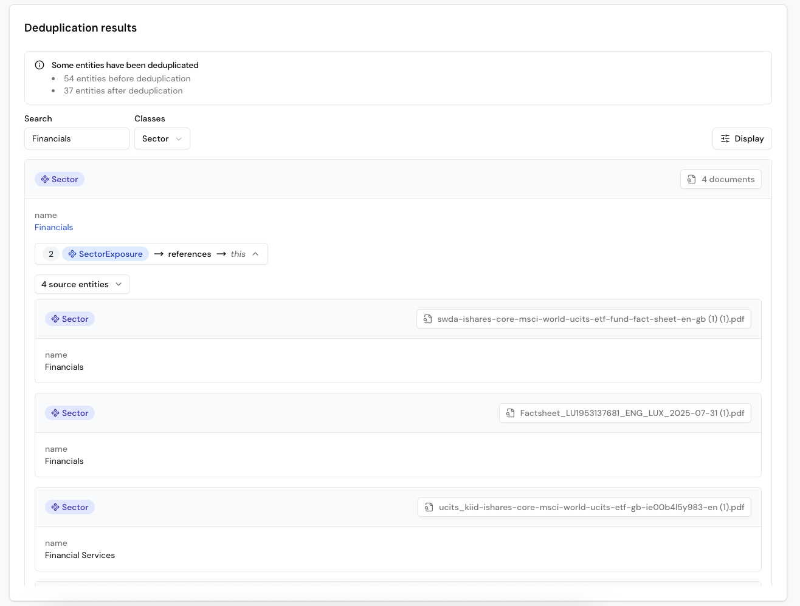
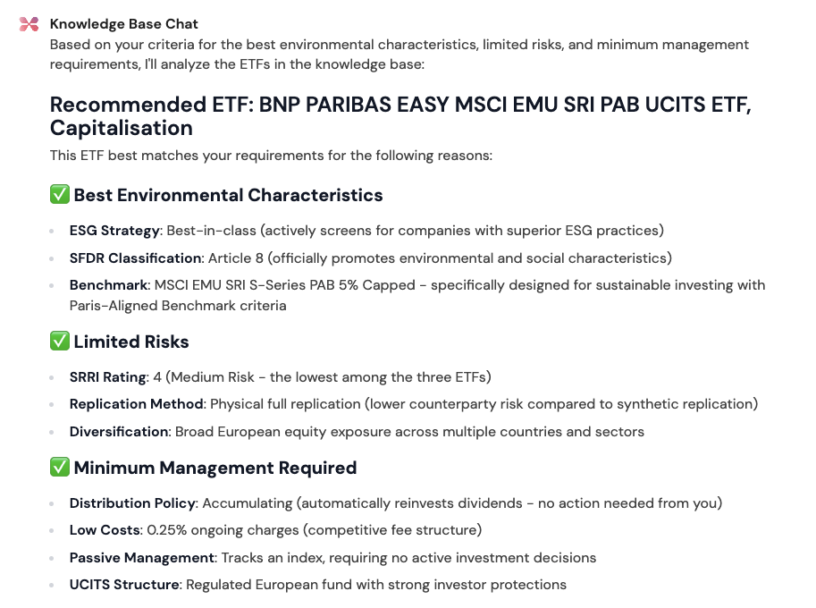
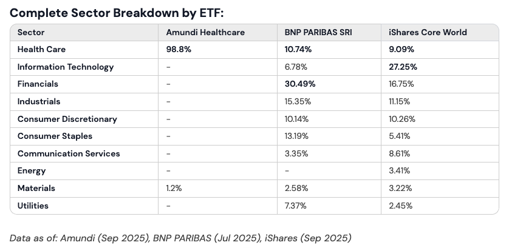
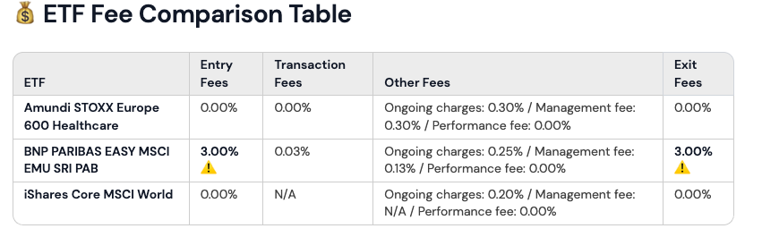
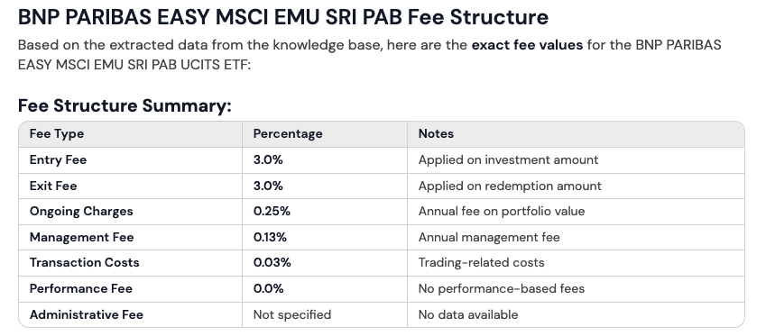

Analyze ETFs
Information on ETFs such as fees, structure, or ESG criteria is often buried in unstructured documents. Blue Morpho lets you model the key data points once and extract them consistently across all documents, making comparison and analysis easy.
In this tutorial, we will answer questions about three different ETFs using their KID and Factsheet documents.
Step 1: Create a project
Every workflow in Blue Morpho begins with a project. A project organizes your collections, ontologies, extractions, and knowledge bases so all related work stays in one place.
- Go to Projects.
- Click New Project.
- Enter a name (e.g. “ETF Analysis”) and a short goal (e.g. “Automate analysis of multiple ETFs”).
- Click Create.
Step 2: Create a collection
A collection is a set of documents analyzed with the same ontology. You can upload PDFs (automatically parsed into text) or TXT files (ingested directly). Parsing time depends on the file size and number of documents.
- Go to Collections.
- Click New Collection.
- Enter a name (e.g. “ETF Documents”) and a short description (e.g. “Factsheets and KIDs for ETFs”).
- Upload the 6 sample PDFs provided in this ZIP file for this tutorial.
- Click Create
Note: The dataset includes both KID and Factsheet PDFs for three ETFs. These are for demonstration only and not for financial use.
Step 3: Create an ontology
An ontology defines the structure of your data: what entities exist, their properties, and how they relate. Think of it as the blueprint for organizing knowledge extracted from your documents.
ETF documents include hundreds of data points, from detailed portfolio holdings to complex derivative exposures. In this tutorial, we’ll focus on a few essential elements to keep the model clear, practical, and easy to follow.
We will therefore create the following objects:
Entities
- ETF: Name, ISIN, management company, benchmark index, replication method, ESG approach, fees, SRRI, and trading details.
- Sector: Basic investment categories (e.g. “Health Care”, “Technology”).
SectorExposure: Links ETFs to sectors, with attributes for date and weight percentage (e.g. “15.3% in Healthcare”).
Relationships:
- ETF → has_sector_exposure → SectorExposure
- SectorExposure → references → Sector
This allows queries such as: “What’s the average technology exposure across all ETFs?”
Create the Ontology in Blue Morpho
You can create an ontology manually or use the ontology assistant. For this tutorial, we’ve already prepared one for you to import.
- Go to Ontologies.
- Click New Ontology.
- Enter a name and description (e.g. “ETF analysis ontology”).
- Choose Import from YAML file and upload this ontology template: ETF analysis ontology
- Click Create
Explore your ontology
After importing, you’ll see your ontology as a list of entities and relationships.
You can add short natural language descriptions to each entity, property and relation to capture their meaning in your business context. These descriptions enrich the ontology with contextual knowledge, helping the agent give grounded answers. Blue Morpho also uses them during extraction to accurately identify and map the right information from your documents, even when wording or terminology varies.
Review the entities and their properties, especially those related to ETFs.

Step 4: Run an extraction
Now let’s extract data from your ETF documents based on your ontology.
- Go to Extraction Runs.
- Click New Run.
- Add a name (e.g. “ETF extraction”) and a description (e.g. “Extract key ETF information from Factsheets and KIDs”).
- Select your Ontology (“ETF analysis ontology”) and your Collection (“ETF documents”)
- Click Create
- Add an Extraction step with the default settings and click Extract.
Review your extraction results
The Results view lists all extracted ETF information from your Factsheets and KIDs, along with the related sectors and the SectorExposure entities linking ETFs to sectors.
For example, search for “iShares Core MSCI World” to compare the data Blue Morpho extracted from its KID and Factsheet. 
This step helps you verify that Blue Morpho correctly extracted the information, created the entities and relationships, and lets you adjust the ontology if needed.
Once the extraction results look correct, move on to deduplication:
- Scroll back up and click Deduplication (optional)
Deduplicate extraction results
Deduplication merges identical entities extracted from multiple sources, preventing duplicates in your knowledge base.
In this tutorial, you’ll notice duplicates for:
- ETFs since information comes from both Factsheets and KIDs
- Sectors since a single sector may appear in multiple ETFs
To deduplicate:
- Click Add class to deduplicate entities
- Select ETF and Sector
In this case, the deduplication process is straightforward, and Blue Morpho can handle it without additional configuration:
- Click on Generate rules without adding any guidelines
- Click on Deduplicate
Review your deduplication results
Scroll down to review the deduplication results.
Using the “iShares Core MSCI World” example, you’ll now see a single ETF entity combining properties from both source entities (the KID and the Factsheet). The resulting entity references both original documents.

For Sector entities, you’ll notice that Blue Morpho merged variations such as “Financial services” and “Finance” into a single standardized “Financials” sector. This ensures consistent analysis of sector exposure across all ETFs.
You can guide the deduplication process by defining preferred final names in the “Guidelines for detecting duplicates.”
Example: “Deduplicate all financial services–related sectors into a single sector named ‘Financial services.’”

Step 5: Create a Knowledge Base
Once extraction and deduplication look correct, turn them into a Knowledge Base so you can query them.
- In the Extraction Results view, click Create Knowledge Base.
- Add a name (e.g. “ETF analysis KB”) and a description (e.g. “Knowledge Base ETF information”).
- Click Create.
Step 6: Query your Knowledge Base
With your Knowledge Base ready, you can now ask questions in plain language. Each query is automatically translated into a structured search based on your ontology and the data extracted from your ETF Factsheets and KIDs.
- Go to Knowledge Bases.
- Select your Knowledge Base (“ETF analysis KB”).
- At the top right, click on “Ask” to start a chat with your knowledge base
Example 1 - Find ETFs
Quickly identify which ETFs match your specific criteria, even if you don’t use the exact terminology.
Show me the ETF with the best environmental characteristics, limited risks and requiring minimum management from me

Example 2 - Analyze portfolio sector exposure
Compare the sector exposure of your selected ETFs using the latest available data.

Example 3 - Compare fees between ETFs
Compare specific cost criteria across all ETFs in your portfolio or selection.
Compare total fees across all ETFs.
Format as a table with columns: ETF | Entry fees | Transaction fees | Other fees | Exit fee

You can also ask follow-up questions to explore the details:

Next steps
You now have a working ETF analysis workflow.
You can:
- Add new ETF Factsheets and KIDs to your collection to expand your analysis.
- Extend the ontology to include more dimensions, such as geographic exposure, equity exposure, currency risk, or protection mechanisms.
Continue exploring Blue Morpho with these next steps
- Analyze other financial products: Adapt the ontology to study corporate bonds, mutual funds, or other instruments.
- Consolidate investment portfolios: Follow the Investment portfolios tutorial to combine financial reports into a single knowledge base.
- Integrate through MCP: Query your Knowledge Base directly from your own environment..